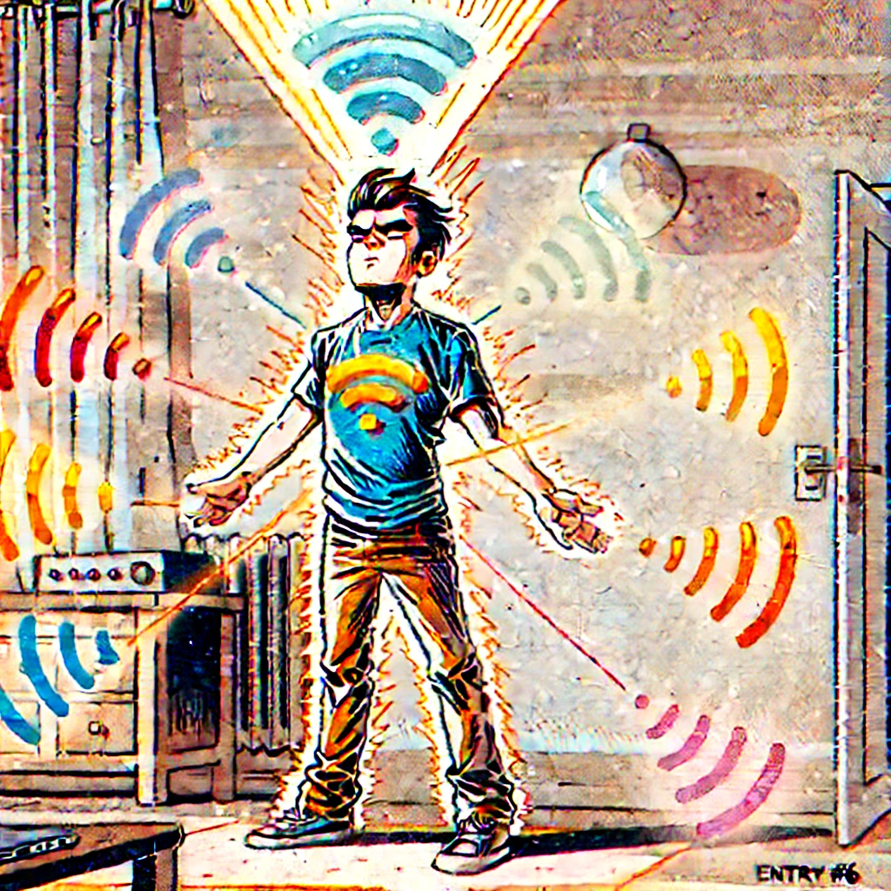
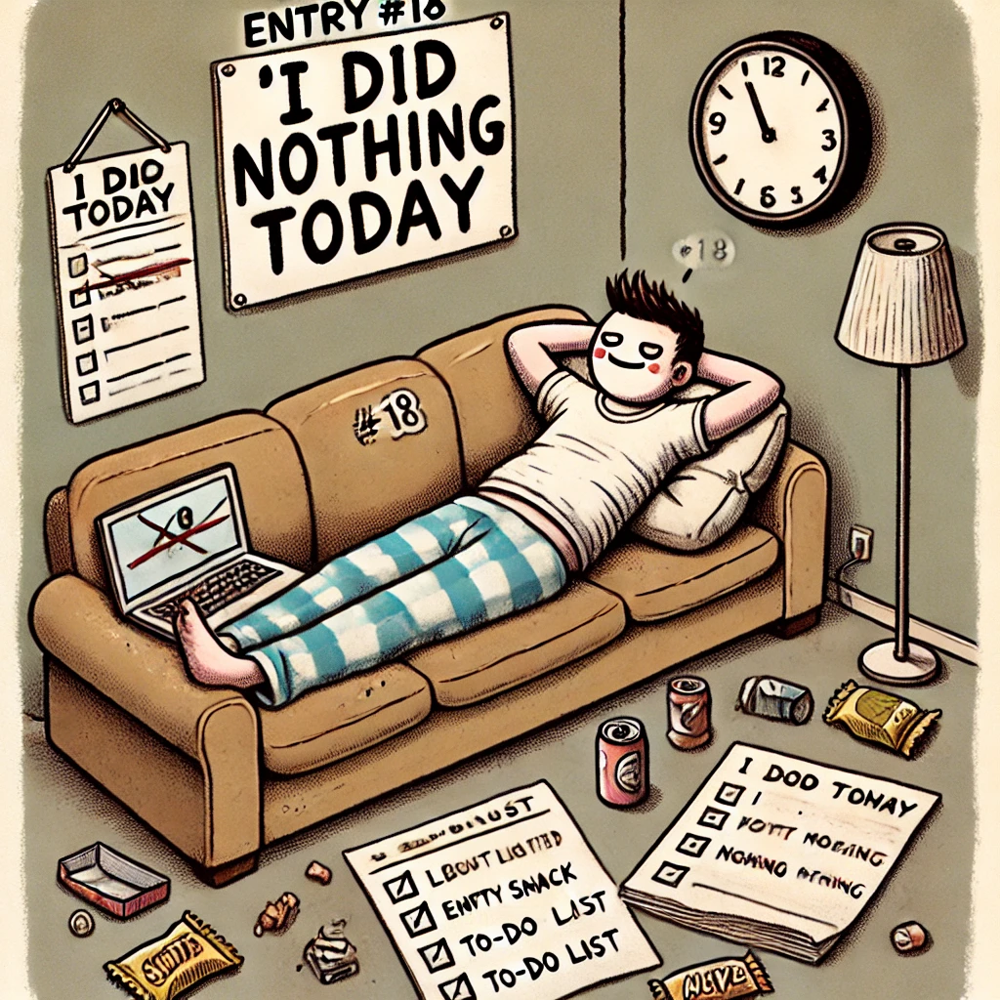
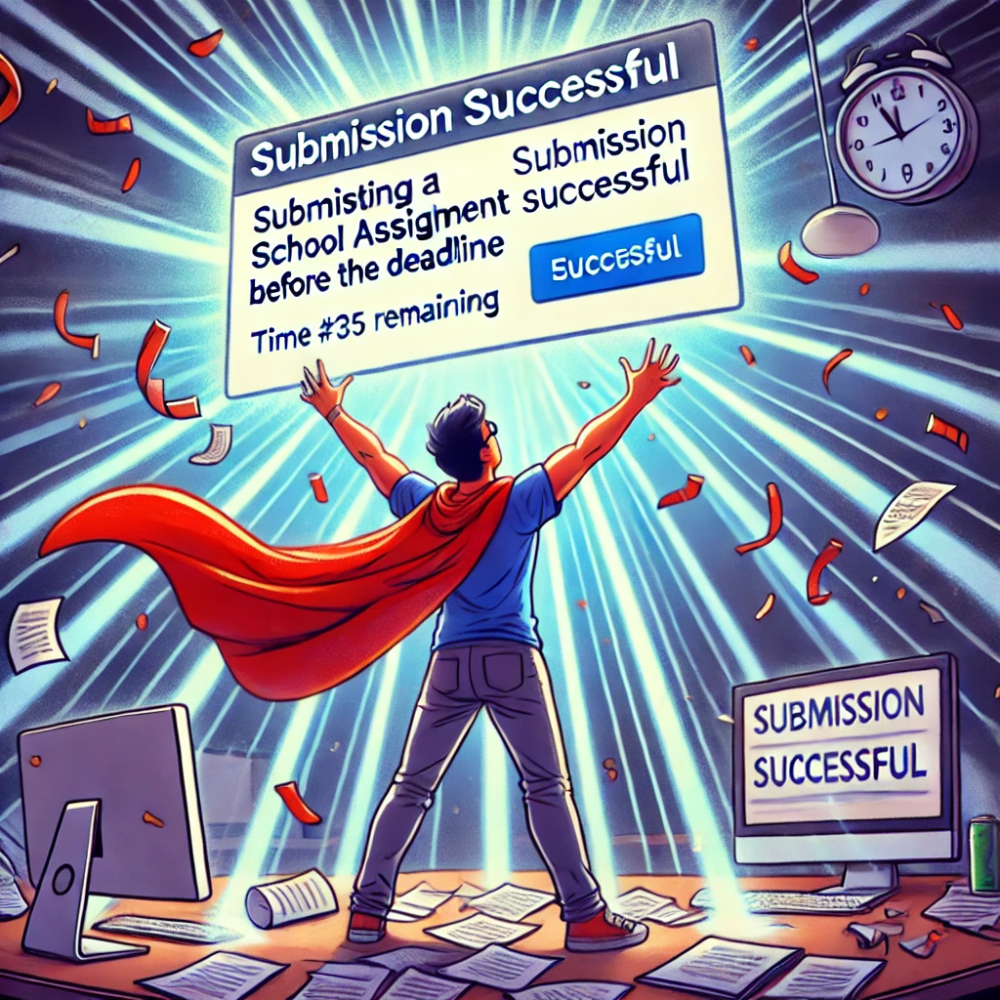

Táblázat
Ez egy fiktív, de ártatlan és vicces lista 25 különleges (de teljesen hétköznapi) „szuperképességről”, és azok értékelése 1-től 10-ig különböző szempontok alapján.
| # | Képesség neve | Hasznosság | Humor faktor | Ritkaság | Hétfő-kompatibilitás | Kávé szükséglet (csésze) |
|---|---|---|---|---|---|---|
| 1 | Dupla pislogás közben gépelés | 6 | 8 | 7 | 2 | 1 |
| 2 | Bevásárlólista fejben tartása 10 percig | 9 | 5 | 3 | 4 | 2 |
| 3 | Szarkazmus olvasása emoji nélkül | 7 | 9 | 6 | 5 | 3 |
| 4 | Kávé illatra ébredés | 8 | 6 | 5 | 9 | 0 |
| 5 | Ctrl+Z az életben (vágyott) | 10 | 10 | 10 | 1 | ∞ |
| 6 | WiFi érzékelés testtel | 6 | 7 | 8 | 4 | 2 |
| 7 | Ébresztő kinyomása álmunkban | 5 | 6 | 9 | 10 | 0 |
| 8 | Szemkontaktus nélkül beszélgetés | 7 | 4 | 2 | 6 | 1 |
| 9 | Minden jelszó ismerete (hiba nélkül) | 10 | 3 | 1 | 3 | 4 |
| 10 | Hibátlan parkolás elsőre | 9 | 4 | 5 | 2 | 3 |
| 11 | Memória visszajátszás film módra | 6 | 8 | 4 | 5 | 2 |
| 12 | Szóviccek gyártása reflexből | 4 | 10 | 6 | 3 | 1 |
| 13 | Google találat 1. próbára | 8 | 5 | 7 | 6 | 1 |
| 14 | Halk ásítás nyilvános helyen | 5 | 4 | 3 | 7 | 1 |
| 15 | Nézésből tudni, hogy lemerült-e | 7 | 3 | 5 | 4 | 1 |
| 16 | „Tudtam, hogy ez lesz” arckifejezés | 5 | 8 | 6 | 6 | 0 |
| 17 | Random zene éneklése zuhanyban | 3 | 9 | 4 | 5 | 1 |
| 18 | „Semmit sem csináltam ma” érzés | 2 | 6 | 10 | 10 | 5 |
| 19 | Okostelefon-telepátia | 7 | 5 | 4 | 6 | 2 |
| 20 | Bizonytalan „igen” hümmögés | 4 | 7 | 3 | 8 | 1 |
| 21 | Fejből tudni, mikor megy a busz | 6 | 3 | 6 | 2 | 2 |
| 22 | Jegyzetelés levegőbe nézve | 5 | 7 | 3 | 3 | 1 |
| 23 | „Csak egy részt nézek” eskü | 2 | 9 | 9 | 7 | 3 |
| 24 | Példátlan produktivitás halogatás után | 10 | 8 | 10 | 10 | 4 |
| 25 | Beadandó leadása határidő előtt | 100 | 0 | Legendás | 0 | ∞ |

#6 - WiFi érzékelés testtel

#18 - „Semmit sem csináltam ma” érzés

#25 - Beadandó leadása határidő előtt